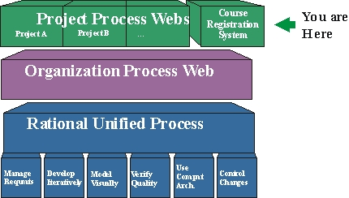

About the Course Registration System (CRS) Project Web
CRS Project Web version 2001.03.00.23
Topics
Creating Process/Project Webs 
This Project Web Site is instantiated from The Wylie College Software Process Web - WCSP. Creation of similar Project Webs for Wylie College projects may be done by copying this as your framework. For more information, see WCSP: Creating Process Webs. You may also start by studying the following tool mentors in The Rational Unified Process On-line :
Navigating the webs
The graphics below shows the web architecture chosen at Wylie College. This project web has links to various pages in the underlying webs. For a description on how to navigate these web sites, see the Navigation Instructions in the underlying process web.

Known Bugs and Limitations
This project website works well using Netscape 4.x. If you run Internet Explorer 4.x, you must upgrade to the Service Pack 1. There are some known bugs and limitations relating to browser/version differences. Please refer to the Guidelines and Restrictions section of the Release Notes in the Rational Unified Process.